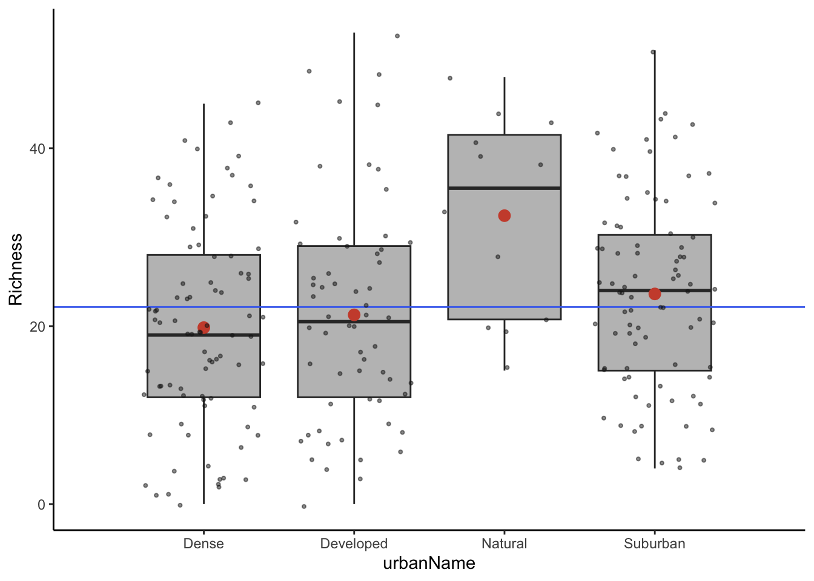
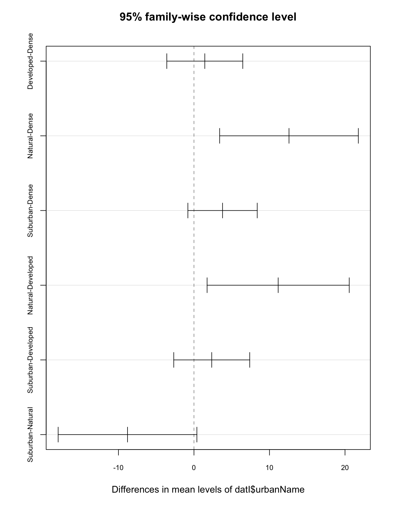
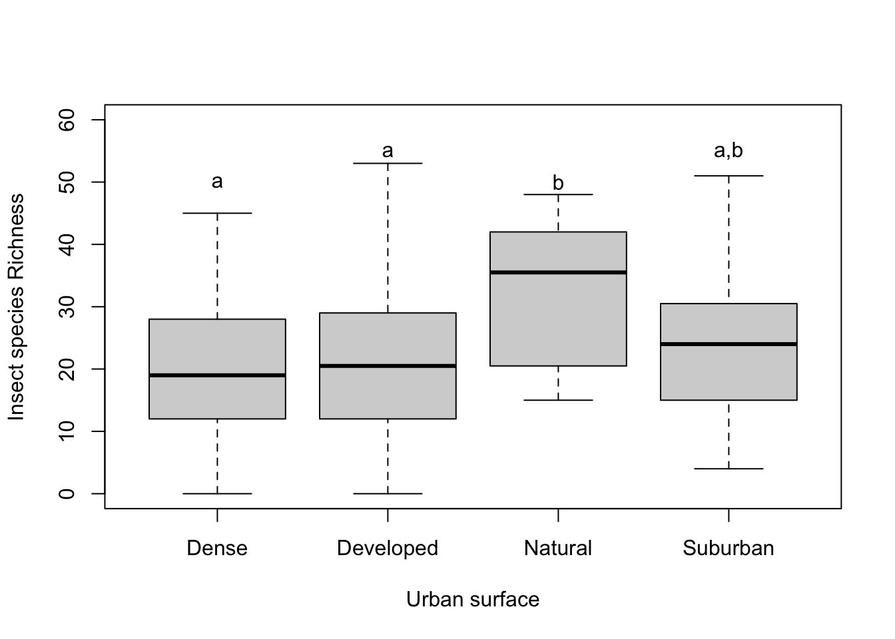

Chapter 7 Introduction to Analysis of Variance (ANOVA)
by Heather Kropp for ENVST 206: Introduction to Environmental Data Hamilton College
7.1 Learning objectives
- Work with data related to measures of biodiversity
- Learn to conduct an ANOVA in R
- Visualize and interpret ANOVA
7.3 Measuring biodiversity: the data
A decline in biodiversity is a common environmental concern. Biodiversity is a concept related to a wide range in the number of species (plant, fungi, and animal) and abundance of populations in a species. Anthropogenic impacts on the environment via habitat loss, increased global temperatures, and pollution can all negatively impact the abundance of living organisms. Extinction of organisms as a result of these impacts is decreasing biodiversity. There are a number of ways to measure biodiversity. Species richness is the number of different types of species present in a particular location. It is typically measured as a numerical count of species and collected from observations that look for presence/absence of different species. Diversity indices account for both the number of different types of species and the evenness of the number of individuals in each type of species.
The urban environment can affect survival and reproduction of some insect species. Urban built environments are often warmer environments with less water availability, particularly in drier regions of California. Buildings and pavement can remove habitat and warmer temperatures on these surfaces may render them unsuitable for insects. Residential areas of urban environments can provide more vegetated environments, but plant cover is often not native and mostly dominated by a single plant cover such as grass. Some insects may be well equipped to survive in many urban environments and there is a concern that urbanization can drive declines in the diversity of insects. This may negatively impact essential part of ecosystems driving pollination, the food web, and the decomposition of plant material.
To evaluate the impact of the urban environment on insects, Adams et al. (2019) trapped insects across the Los Angeles area and examined the number of species at each location. Below is a map of sampling locations used in the study across differing levels of urbanization.

Aerial view of Los Angeles area highlights the varying levels of urbanization from the highly devleoped areas of commercial complexes and downtown to mountain parks Source: Tuxyso, CC BY-SA 3.0, via Wikimedia Commons
urbanType urbanName Richness lawn
1 3 Suburban 30 Yes
2 8 Developed 3 Yes
3 9 Dense 22 No
4 9 Dense 1 Yes
5 8 Developed 22 No
6 8 Developed 15 NoAs you learned in class, ANOVA is a widely used technique for testing for differences in three or more groups. ANOVA will be useful for examining the insect species richness across an urban gradient in Los Angles. The Richness and the urbanName column will be used for the test. urbanName gives the type of urban environment the species richness was measured in. You will want to specify urbanName as a factor to work best in the ANOVA. The urbanType column provides an identifying number originally used in by the authors. We are only focusing on a few urban areas in this analysis. Below is a table that provides a more detailed description of each area used in the study site. The numbers in the table coincide with the urbanType column.
It will be helpful to convert the names to factors in R.
7.4 ANOVA overview
In ANOVA, the F statistic is used to evaluate differences in data between groups. Here the F-ratio that we use for our statistical evaluation is calculated based on the variance of the data around the mean. First the among group (SSamong, sometimes referred to as between) sum of squares calculates the squared difference between each group mean and the overall mean of all the data and sums up the differences for all groups. The within group (SSwithin, also referred to as residual) sum of squares calculates the squared difference between each data observation and its group mean and sums these differences for all observations. The mean squares is then calculated using the number of groups (SSamong) and both the number of groups and observations (SSwithin). This table also shows the total SS for good measure, but we don’t often look at it since SStotal = SSamong + SSwithin. The F-ratio is calculated by dividing the mean square for among groups by within groups. The p-value provides a probability for observing the calculated F-ratio and all values greater under the null distribution. You will want to use the standard confidence level of 0.05 to make your assessment.
Source | Degrees of freedom | Sum of Squares | Mean square | F-ratio ______________|_______________________|____________________|_____________|_________ Among groups | a-1 | \(\sum_{i=1}^{a}\sum_{j=1}^{n}(\overline{Y_i}-\overline{Y})^{2}\) | \(\frac{SS_{among}}{a-1}\) | \(\frac{MS_{among}}{MS_{within}}\) Within groups | a(n-1) | \(\sum_{i=1}^{a}\sum_{j=1}^{n}({Y_{ij}}-\overline{Y_{i}})^{2}\) | - | -
Here a represents the total number of groups and n represents the number of observations within groups.
7.5 ANOVA in R
7.5.1 Checking assumptions
Next you will run the ANOVA test on the insect data to examine whether the different urban environments impact species richness. Before checking the assumptions, it’s a good idea to visualize the data. I’ll show the data using the plots from class that help visualize the different values used in ANOVA. The grey points show individual observations overlain on the boxplot for each group. The red points show the group mean and the blue line shows the mean for all the data.
The first assumption is normality for each group. You must check normality for each individual group. Don’t forget that unique can be helpful for getting the names for each group:
[1] Suburban Developed Dense Natural
Levels: Dense Developed Natural SuburbanThe sample size is small enough to use the Shapiro Wilk’s test.
Shapiro-Wilk normality test
data: datI$Richness[datI$urbanName == "Suburban"]
W = 0.98087, p-value = 0.2461
Shapiro-Wilk normality test
data: datI$Richness[datI$urbanName == "Developed"]
W = 0.96155, p-value = 0.05604
Shapiro-Wilk normality test
data: datI$Richness[datI$urbanName == "Dense"]
W = 0.97508, p-value = 0.1025
Shapiro-Wilk normality test
data: datI$Richness[datI$urbanName == "Natural"]
W = 0.91559, p-value = 0.2514The null hypothesis is that the data are normally distributed. Here, each group is higher than our confidencle level of 0.05.
The second assumption of equal variance can be checked with the Bartlett test.
Bartlett test of homogeneity of variances
data: datI$Richness by datI$urbanName
Bartlett's K-squared = 1.2091, df = 3, p-value = 0.7508Both equal variance and normality assumptions are appropriate for the data. The other assumptions are that observations are independent of each other and correctly classified in each group. Since this data comes from a peer reviewed study that uses the same type of statistics (frequentist), we can assume that the research design and data are set up to meet these assumptions.
7.5.2 Running the ANOVA
Now that you’ve had a chance to check the assumptions and visualize the data, you are ready to run the ANOVA in R. There are two steps to this test in R. You first specify a linear model with the lm function. The next step is to run the ANOVA calcluations using aov function. Both of these functions will simply run the calculations. To view the ANOVA table of results, you will print the table using the summary function. In the lm function we will specify a formula Richness ~ Urban.
#specify model for species richness and urban type
in.mod <- lm(datI$Richness ~ datI$urbanName)
#run the ANOVA
in.aov <- aov(in.mod)
#print out ANOVA table
summary(in.aov) Df Sum Sq Mean Sq F value Pr(>F)
datI$urbanName 3 1944 647.9 4.898 0.00254 **
Residuals 236 31216 132.3
---
Signif. codes: 0 '***' 0.001 '**' 0.01 '*' 0.05 '.' 0.1 ' ' 1Here the table will print out such that the upper row labeled with our group vector name (datI$urbanName) is our among group variability (sum of squares for group means compared to overall mean) and the residuals row is the within group variability. You can see the F value in the upper right part of the table and the associated p-value.
7.5.3 Post hoc comparisons
The ANOVA results alone do not give us a complete picture of the differences between urban landcover types. Some groups actually look quite similar. You must check to see how the means compare between groups to make a full statistical conclusion. You would want to highlight that only some groups may differ from each other when drawing conclusions about the urban environment impacts on species richness. This pairwise comparison between groups is called a post hoc test. Tukey’s HSD (Honestly Significant Difference) test can be used to conduct this comparison.There is a simple built in function in R. You just have to give the name of the variable that has the ANOVA results.
Tukey multiple comparisons of means
95% family-wise confidence level
Fit: aov(formula = in.mod)
$`datI$urbanName`
diff lwr upr p adj
Developed-Dense 1.433333 -3.5966663 6.4633329 0.8819569
Natural-Dense 12.583333 3.3998525 21.7668141 0.0026479
Suburban-Dense 3.785714 -0.8060261 8.3774547 0.1456297
Natural-Developed 11.150000 1.7397324 20.5602676 0.0128693
Suburban-Developed 2.352381 -2.6776186 7.3823805 0.6210733
Suburban-Natural -8.797619 -17.9810999 0.3858618 0.0658910Here you will notice that there are two group names in each row indicating which groups are being compared. A significant difference between groups means that the confidence interval in the difference between the means will not overlap with zero and will have a p-value below our confidence level threshold of 0.05. Note that this test prints a p-adj value. This means it has made some adjustments to account for the fact that were a comparing many means and should account for this in our calculations.
You can also use the plot function and input the entire test variable to generate a plot that shows the confidence levels for the mean comparisons. This can help you get a better visualization for how close these intervals are to zero since there are a lot of numbers printed out in the table.
#make a plot
#make axes labels smaller than usual to fit on plot using cex.axis
plot(tukeyT, cex.axis=0.75)
7.5.4 Interpreting the results
When you interpret ANOVA results, you will want to summarize the test results, the means and difference between means, and make a plot that visualizes the data in each group.
Typically a bar or box plot is used to show the means or quartiles of each group with letters above the data to indicate when groups are similar. For example, an ANOVA with four groups that all significantly differed from each other would show a different letter for each group like a,b,c,d.
The Tukey HSD results indicate that the Dense, Developed, and Suburban are all similar. Natural differs from Dense and Developed, but not Suburban. Multiple letters can be used for a group. Dense, Developed, and Suburban all get the letter a. Natural will get the letter b. Since Suburban is similar to Natural, it will also get a b.
The best way to add labels to a base plot in R is the the text function. The arguments are text(x coordinates, y coordinates, text labels to add). In the code below, the coordinates and labels will be set up as vectors.
# box plot
plot(datI$Richness ~ datI$urbanName,
xlab = "Urban surface",
ylab= "Insect species Richness",
ylim=c(0,60))
# x coordinates for labels
xname <- as.factor(c("Dense","Developed","Natural","Suburban"))
# y coordinates for labels
ylabel <- c(50,55,50,55)
# labels to add
textName <- c("a","a","b","a,b")
# add letters to existing plot
text(xname, #x coordinate
ylabel, #y coordinate
textName) # labels
7.6 Citations
Insect Species Richness Adams, B., E. Li, C. Bahlai, E. Meineke, T. McGlynn, and B. Brown. (2020). Local- and landscape-scale variables shape insect diversity in an urban biodiversity hot spot. Ecological Applications. 30: e02089.
Data citation Adams, Benjamin et al. (2020), Local and landscape scale variables shape insect diversity in an urban biodiversity hotspot., v2, Dryad, Dataset, https://doi.org/10.5061/dryad.7d7wm37rd
output: html_document: theme: yeti highlight: pygments —